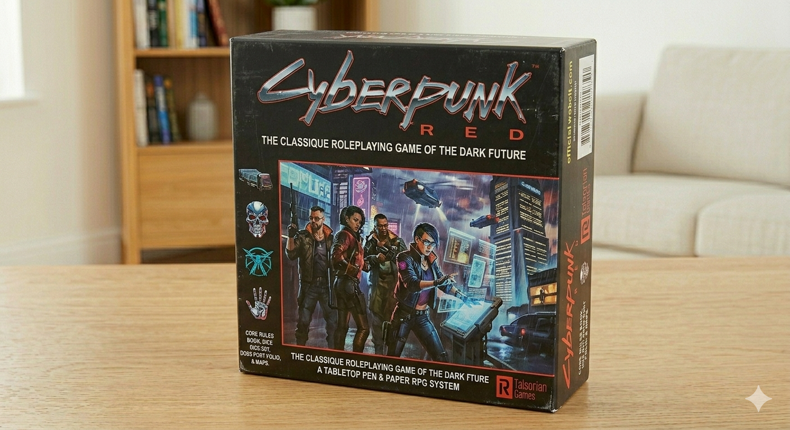
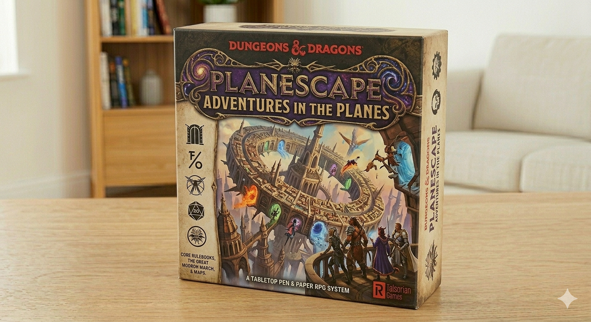

Cyberpunk Red
Un juego de rol ambientado en un futuro distópico donde los jugadores asumen el papel de mercenarios en una ciudad llena de tecnología avanzada y corrupción.
$34.990
-10%!

Un juego de rol ambientado en un futuro distópico donde los jugadores asumen el papel de mercenarios en una ciudad llena de tecnología avanzada y corrupción.

Una edición especial del clásico juego de rol Dungeons and Dragons, ambientada en el multiverso de Planescape, donde los jugadores exploran diferentes planos de existencia y enfrentan desafíos únicos.

Un juego de rol que combina elementos de ciencia ficción y fantasía, ambientado en un futuro cercano donde la magia y la tecnología coexisten, y los jugadores asumen el papel de mercenarios en un mundo lleno de conspiraciones y peligros.